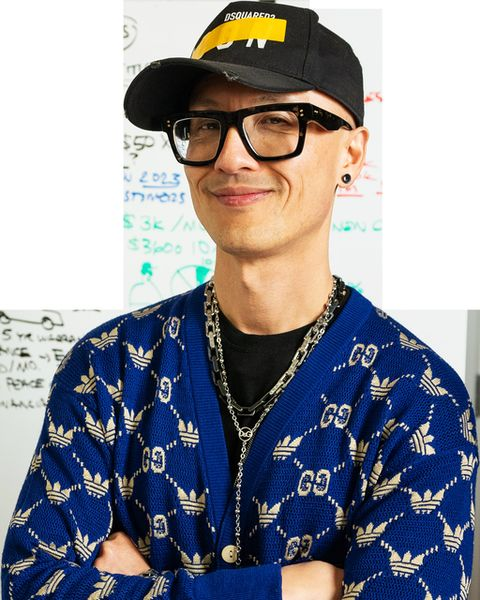
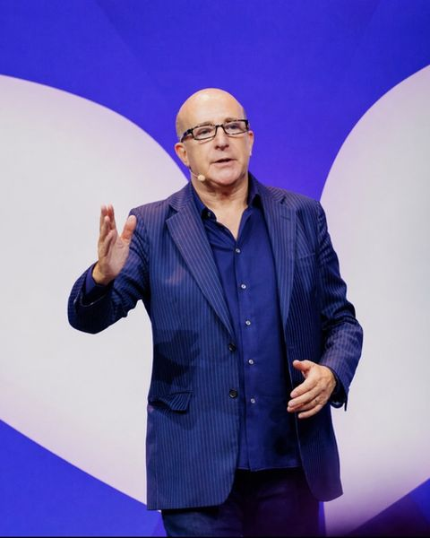

One person owns the architecture, and teaches the majority of it
Per the author-proposal standard: the Curriculum Expert owns the lesson sequence, module logic and transformation journey, teaches the majority of lessons, and is compensated on royalties rather than a flat fee.

Why him, beyond the obvious. He announced this programme from the stage, so the voice that sold it must be the voice that teaches it. But the data adds a real caveat worth stating: his ratings are strongest when the material is structured rather than improvised. This curriculum is the most structured thing he has ever taught — a doctrine he has already written down, in a sequence he has already delivered once at speed. That is the condition under which he scores 9.9.
Six guest lanes, seven names — all in consideration
Selection rule, applied as in the author deck: proven with Mindvalley students, one lane each. Every guest below is in consideration until Gareth confirms otherwise — no contracts, and no status stronger than the live speaker table supports. One lane carries two names: Marisa Peer stands as the named alternative to Paul McKenna.

The highest single lesson score in Social Media Mastery, and the session is specifically about converting attention into authority and revenue — the exact bridge this programme is built on. His chunk-down methodology and live breakouts were repeatedly called the best session of the cohort.
Action required: he is on roster for AI for Founders but does not appear on the Expert & Authority speaker table. Adding him is the highest-value faculty action on this proposal.
The strongest storytelling asset in the building, and already woven into this curriculum whether we hire her or not — Vishen quotes her from the stage in the week-1 lesson: "shine your light so bright, and if anybody complains, tell them to just put on some shades." She was the first big-name teacher to take his stage and gave Mindvalley its first real break. Handing the story week to the person who is already the emotional anchor of week 1 closes a loop the students will feel.
Note: S&I 2026 shows one risk worth managing — handing a story slot to a new guest cost 0.07 against the 2025 incumbent. Lisa is the incumbent here, not the newcomer.

"Paul remains the strongest guest asset" — the S&I 2025-vs-2026 comparison, where his score held to within 0.01 across two cohorts. Vishen named his confidence hypnotherapy from the accelerator stage as a route through the visibility wound. And he is a double asset: the teacher in week 2, and the worked example of the product step ladder in week 14.
Scheduling caution from S&I 2025: his off-cadence add-on drew 23% attendance — the worst in that base. Book him into the mainline Tuesday slot only
Named alternative: Marisa Peer holds the same lane — see her card. Paul appears across several Mindvalley programmes; the W2 occupant is a diversification decision to make before contracts
The most-requested instructor for return sessions across all our programmes — students asked for him back more vocally than anyone. He stayed thirty minutes past time answering every question. Compassionate Curiosity is the right instrument for a room that raised its hands when asked who is uncomfortable selling: a high-trust conversation, not a closing technique.
Optional add: his Contracts & Agreements material (9.56) is a natural bonus session on IP and client agreements for the identity tier
"Without being famous" is exactly the right framing for this intake, and the author deck says so explicitly. Vishen also named him from the accelerator stage as a guest who goes "super deep on how he closes million dollars from a stage." The deck recommends piloting one lesson before a full commitment — we should honour that, and the pilot is week 16.
Condition: pilot lesson before full curriculum commitment, per the author deck
She fills a gap no other author here covers — the community-led business model — for an intake that is 68% female and majority service-based. Bossbabe reached eight figures with community at its core. Her score sits below the others on a small sample, and her MVU feedback is still pending analysis, so this is a lane worth holding and a teacher worth piloting.
Condition: complete the MVU 4.41/5 feedback analysis before confirming
Why she is here: Paul McKenna already appears across several of our programmes, and the confidence lane is the one place this faculty can diversify without losing the mechanism — Marisa's Rapid Transformational Therapy attacks the same subconscious switch W2 needs, with "I am enough" as the installed belief, and she is a proven Mindvalley author with her own quest. The caveat, stated plainly: she is an alternative to Paul, not an addition — one of them teaches W2, decided before contracts. Her cohort ratings still need pulling from the source bases before she can be scored against the 9.3 bar.
Condition: pull her quest and cohort ratings; decide the W2 occupant before any contract
Five lab leads, two anchor disciplines
Thursday is where this programme either works or repeats the Speaking & Influence workshop dip. The lab bench is five leads, all in consideration: Alessio Pieroni and Kash Rupalia anchor the two disciplines — the money half and the camera half — running twelve of the sixteen days between them, and Jimmy Naraine, Sabrina Stocker and Safwaan Mohammed each lead their own discipline days. Students see two constant faces on the build floor, not a rotating cast.
He is the only person here who arrives with published conversion benchmarks — 40% opt-in, 4% VIP, 7% challenge conversion — which is exactly what a lab lead needs: a number to build against, not an opinion. Every day he owns is a money mechanic, so he is auditing the same thing week after week rather than switching disciplines.
Former monk; runs Vishen's Instagram. He owns every day where a student has to point a camera at themselves or publish something — starting with week 1, which is the single highest-stakes lab in the programme because it is where the visibility wound either breaks or wins. His no-face formats are the practical escape hatch for the many students who raised a hand at "who doesn't want to be on camera."
Three more lab leads keep their own days
Jimmy, Sabrina and Safwaan sit on the same lab-lead bench as Alessio and Kash — five leads, all in consideration, each owning the days in their discipline.
Left Goldman Sachs 13 years ago and built a course business large enough to fund a nomadic life. The pyjama draft is his, and it is the single most effective anti-perfectionism device in this curriculum.
Owns the layer nobody else in our catalogue teaches: ranking inside AI answers. Also the strongest performer among the accelerator specialists on our own workshop days, which is why she has a lab day rather than a lecture — and a seat on the lab-lead bench.
Owns idea selection — the 80/20 of YouTube. Outlier scoring, the TAM ceiling, and the splice-and-spin method that turns the student's week-3 edge into packaging that earns a click.
All five lab names are already in consideration for Expert & Authority. Alessio Pieroni, Akash Rupalia, Jimmy Naraine, Sabrina Stocker and Safwaan Mohammed all sit on the live speaker table with status "In consideration" — alongside Paul McKenna, Lisa Nichols, Natalie Ellis, John Lee and Kwame Christian. What none of them has is a lesson count, a session title or a recording date. That is what this document supplies.
Who teaches what, and who builds it
| Week | Teach (Tue) | Implementation Day (Thu) | Vishen's role |
|---|---|---|---|
| W1 | Vishen — the visibility wound | Kash — post the thing | Live |
| W2 | Paul McKenna (alt: Marisa Peer) — instant confidence | Kash — on camera / no-face formats | Recorded bookends |
| W3 | Vishen — your edge and niche | Alessio — edge audit + RAS test | Live |
| W4 | Chris Do — position, belief, villain | Alessio — crown the belief | Recorded bookends |
| W5 | Vishen — the 48-hour MVP | Jimmy Naraine — idea clusters | Live |
| W6 | Vishen — quality is the marketing | Jimmy Naraine — the pyjama draft | Live |
| W7 | Vishen — selling without selling | Alessio — ship the quiz | Live |
| W8 | Lisa Nichols — your story is the asset | Kash — the story bank | Recorded bookends |
| W9 Intensive | Vishen — the masterclass doctrine (Day 1) | Alessio build floor · Kash shoot floor (Days 2–3) | Live — flagship |
| W10 | Chris Do — from viral to valuable | Kash — the hook bank | Recorded bookends |
| W11 | Natalie Ellis — community as a business model | Sabrina Stocker — LinkedIn & AEO | Recorded bookends |
| W12 | Vishen — the long-form advantage | Safwaan Mohammed — YouTube ideas | Live |
| W13 | Vishen — the free rung | Alessio — nine emails scheduled | Live |
| W14 | Vishen + Ajit Nawalkha — the product step ladder | Alessio — map, price, sequence | Live — flagship |
| W15 | Kwame Christian — the enrolment conversation | Alessio + Kwame — run the call | Recorded bookends |
| W16 | John Lee — $1M without being famous | Alessio + John — your offer, stacked | Recorded bookends |
| W17 | Vishen — the identity tier & graduation | Alessio + Kash — certification & the bridge | Live |